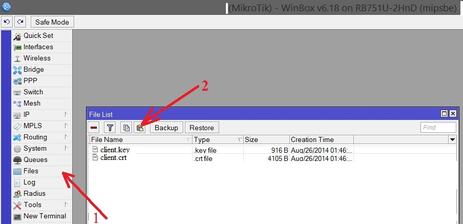
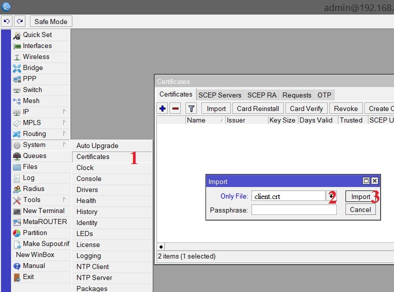
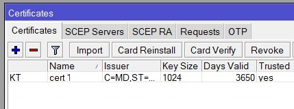
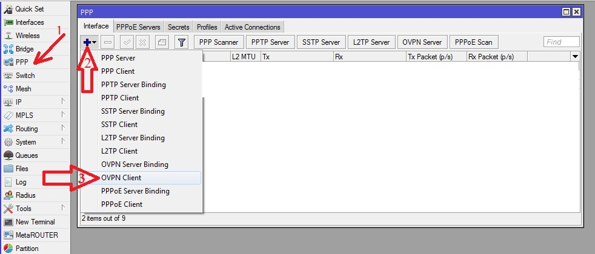
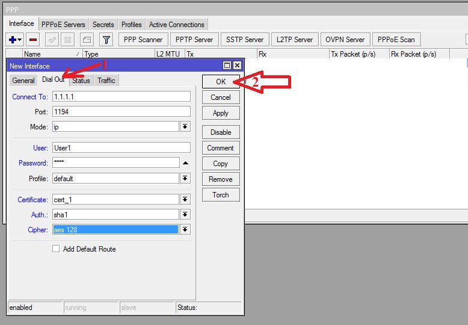
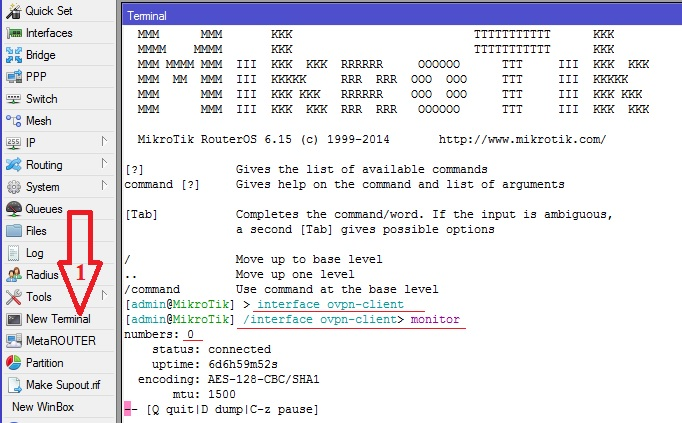

Настройка OpenVPN клиента на роутере Mikrotik
1) Необходимо добавить сертификаты (клиентские сертификат и ключ (client.crt, client.key и по желанию корневой (ca.crt)) на роутер:
Процесс создания сертификатов был рассмотрен в статье о настройке OpenVPN сервера на Mikrotik
Внимание!!! Не передавайте никому закрытый ключ сертификата – “ca.key”, имея его можно создавать сертификаты подписанные данным ключом.
2) Заходим на Mikrotik посредством утилиты winbox, переходим в раздел Files и копируем туда наши сертификаты: client.crt, client.key и ca.crt(опционально)

3) После этого произведём импорт сертификатов, идём в раздел System – Certificates, выбираем поочередно сертификаты из списка (client.crt->client.key(-> ca.crt)) и жмём кнопку Import

4) Получится следующая картина:

5) Само соединение OpenVPN настраивается в меню PPP->Нажимаем кнопку "+" -> в выпадающем списке выбираем OVPN Client

6) На вкладке Dial Out указываем адрес сервера, логин/пароль, порт, клиентский сертификат и тип шифрования

7) После этого открываем терминал и проверяем, поднялось ли соединение:
https://voxlink.ru/kb/voip-devices-configuration/ovpnclientmikrotik/
Готово!